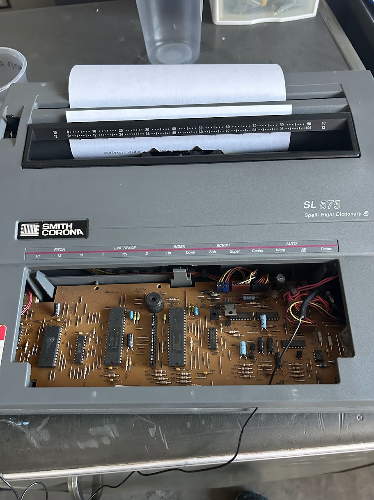
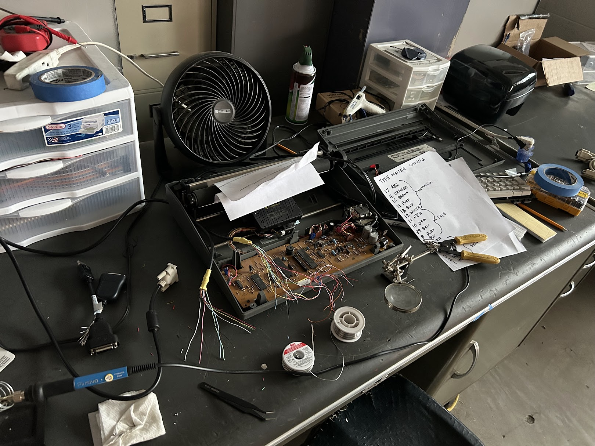
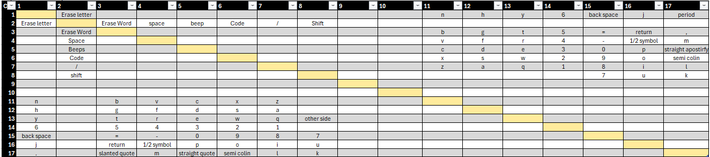
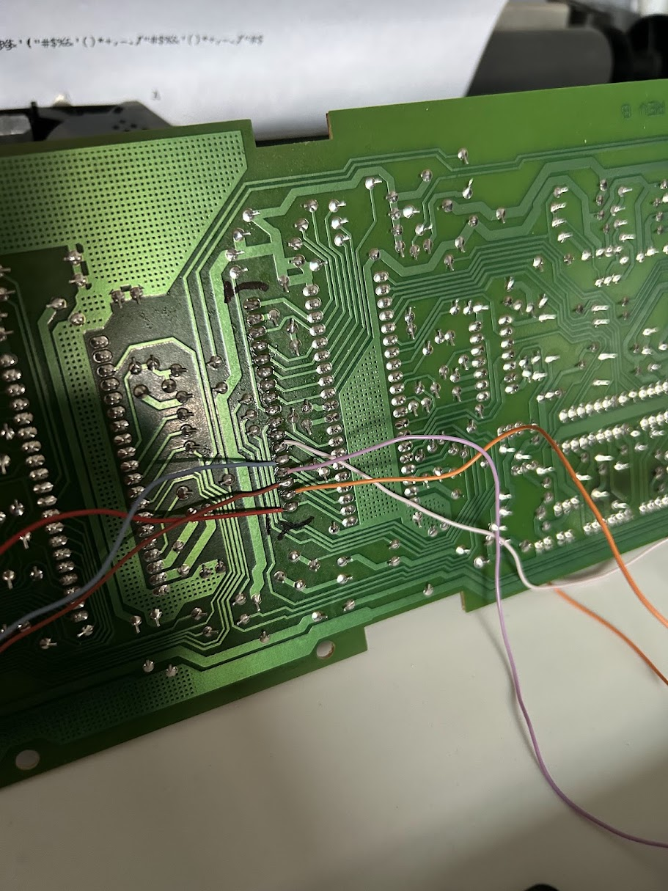
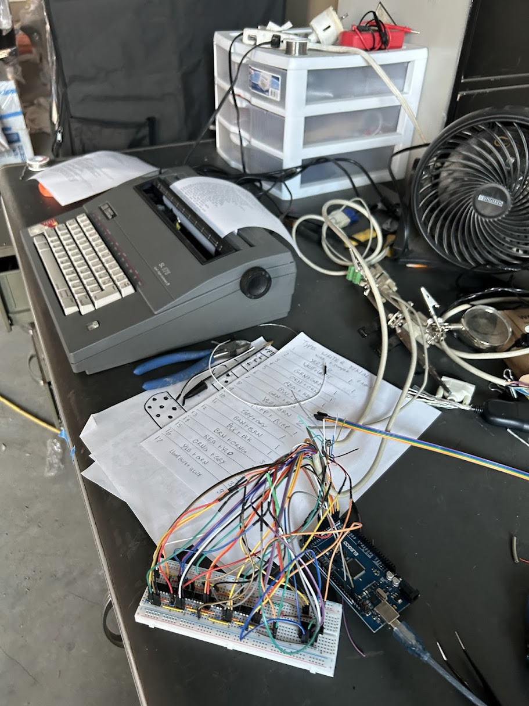

Automatic Typewriter
Smith Corona SL575 | Manual operation preserved • Keyboard emulation interface
Overview

The plan was simple and stubborn: build an automatic typewriter that still feels like a typewriter. The base is a Smith Corona SL575—a semi-mechanical hybrid with an electronic keyboard/logic and a mechanical print system. There were a few paths I could take: crack its brain storage, hijack the signals to the print mechanism, or bolt on my own hardware. The least invasive idea—and the one I went with—was to emulate the keyboard so manual use stays intact.
Keyboard Matrix & Mapping

The keyboard plugs in with a 17-pin ribbon cable forming a classic matrix—short the right two lines and you get a keypress. After a little probing, I lucked out: the whole thing runs at 5 V logic, perfect for an Arduino Mega 2560. I used jumpers to map every key (I’ll get to Shift in a second).

Hardware Interface

My first test was quick-and-dirty: flattened wires squished alongside the ribbon, then toggling Mega pins high/low. It worked, but was unreliable—pins could shift and accidentally short lines, and directly driving logic levels sometimes shorted multiple matrix lines.
I switched to CD4066 analog switch ICs (5 V, logic-controlled). Each ribbon line feeds a switch input; enabling two switches physically shorts their outputs—a clean, repeatable “keypress” with isolation. For durable wiring, I cut two VGA display cables in half and soldered to the keyboard PCB, then routed everything into a desktop organizer holding the Mega and breakout boards. Cable management got way easier and the connection became rock-solid.
The Shift Key Puzzle

Shift has to be pressed with other keys, which means multiple matrix shorts at the same time. Tracing the PCB showed Shift bridges lines 7 and 8. I dedicated another CD4066 pair to short 7↔8 on demand, then combined it with the letter’s row/column short—so the system can press three or four lines safely and reliably.
Firmware & Print Logic
I mapped each character to its (row, column) pair(s), then wrote a simple engine: look at the string to print, process line-by-line, short the two pins for a character, hold, release, and move on. On top of that I added small generators that randomly pick images, poems, and messages to feed the printer so it feels alive.
It also occasionally “leaks” accounts and balances—all Philadelphia-themed names and entirely fictional—just to keep things playful.
Live Demo
Status & Install
The typewriter is fitted with a long paper spool and ready to run when the museum opens—reliable for showtime, but still welcoming to anyone who wants to walk up and type. Exactly the balance I wanted.